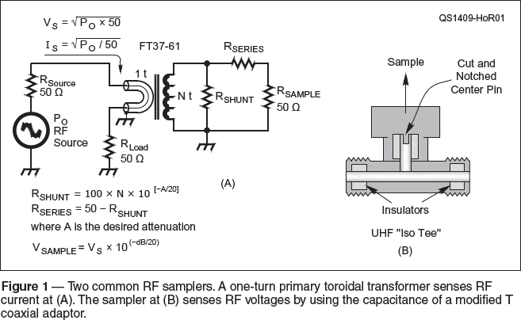
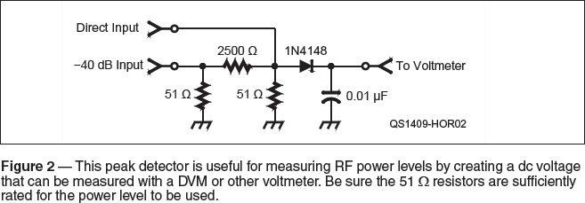
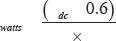
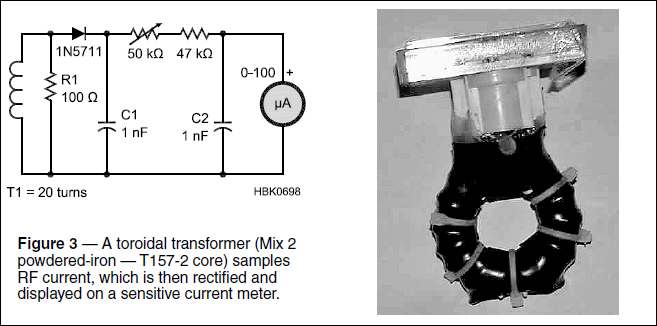
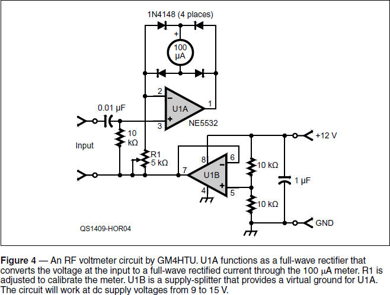
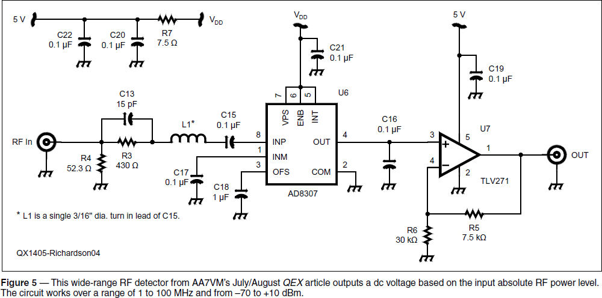

Tests and Test Equipment
Experiment #140 — RF Measuring Tools
This column presents several simple circuits you can build yourself to satisfy a common ham radio need — detecting and measuring RF voltages and currents. We’ll start by figuring out how to get access to those RF signals, then measure the value of the voltage or current, and finally turn it into a value measured in decibels. All of the tools are described further in the articles listed in the references at the end of this article.
RF Samplers
How do you tap into a feed line carrying RF without disturbing it (much)? Simple — just get a T connector and hook up your test instrument with a jumper, right? Well, no. If that little bit of cable becomes more than a few percent of an electrical wavelength long, the combination of the terminating impedance and transmission line effects can seriously disturb signals in the main feed line.
The solution is to use a sampler that extracts a very small amount of RF power while not affecting the main feed line very much. Two common methods are used to do this, as shown in Figure 1; the toroidal transformer and the capacitive coupler.1, 2, 3

For the toroidal transformer, pick the desired attenuation, A, in dB and the turns ratio, N. Then solve for RSHUNT and RSERIES. Assuming the sampler’s main line is connected to a 50 Ω load with VS across it, and RSAMPLE in Figure 1A is 50 Ω, the output voltage, VSAMPLE, across RSAMPLE will be A dB below VS.
The capacitive sampler, known as the Isotee, is not designed to have a specific attenuation, but rather to simply pick off a small amount of RF from a main feed line. The Isotee is used to provide a signal for a spectrum analyzer or frequency counter. Be sure to label the coupler clearly to avoid using it as a regular T connector and then wondering why you have a bad connection!
For both the toroidal and capacitive samplers, remember to take into account their frequency response when making comparisons between signals of different frequencies. For example, if you are interested in determining harmonic content of a signal relative to the fundamental, the sampler’s response should be consistent well beyond the frequency of the harmonic. You can determine the sampler’s frequency response by measuring the sampler’s response with a lab-quality instrument.
RF Peak Detector
Without an oscilloscope handy or a true-RMS RF voltmeter, the most useful RF signal amplitude measuring tool is a peak detector. Experiment #53 presented both envelope detector (for receiving AM signals) and peak detector circuits. Figure 2 shows an RF peak detector with both a direct 50 Ω input and an input with 40 dB of attenuation.

The meter’s response can be calibrated by measuring the input voltage with an oscilloscope or a lab-quality voltmeter. The input power can be calculated as:

Where R is the value of the resistors connected to the inputs (51 Ω in the figure), Vdc is the dc voltage measured by the voltmeter, and 0.6 represents the diode’s forward voltage drop with 1 mA of current. (This equation is from section 7.3 of Experimental Methods in RF Design.4) At lower power and diode current, the voltage drop will be lower, causing a non-linear calibration curve!
A 1N4152 diode can be substituted with a faster response time to extend frequency response. A 1N5711 Schottky diode will have still faster response and a lower voltage drop. And a 1N34A germanium diode will have a lower forward voltage drop (approximately 0.3 V), making the meter even more sensitive. To use the meter for measuring power, be sure the 51 Ω resistor power and diode reverse voltage ratings are adequate for the power level to be used. For a power level of 25 W, the value of Vdc will be about 50 V.
RF Current Sniffer
A common reason to go “RF hunting” is to find RF current flowing on feed lines or other conductors. Or perhaps you would like to make some relative measurements of RF current to test antenna or ground radial system performance. Tom Rauch, W8JI, developed the handy RF current meter shown in Figure 3 for this purpose.5 RF current is measured just as described for the toroidal transformer method in Figure 1. To keep leads short, the entire assembly is glued to the back of the 100 μA meter. If a clamp-on transformer is required, try KØLR’s design at lowfer.us/k0lr/currprob/currprob.htm.

RF Voltmeters
The circuit of Figure 4 was designed by GM4HTU and published in the Summer 2014 issue of the G QRP Club’s magazine, SPRAT. This interesting circuit uses ½ of an op-amp (U1A) and bridge circuit to convert the input voltage at Pin 3 to a full-wave rectified current through the 100 μA meter. Meter current is equal to the input voltage divided by the value of R1. The meter responds to the average value of the current and can be calibrated for either RMS or peak value. The op-amp should have a gain-bandwidth (GBW) product of several times the maximum frequency signal to be measured. (The NE5532 GBW is 10 MHz.) With these values, the maximum input voltage is about 1 V. The remaining section of the op-amp (U1B) acts as a dc power splitter to provide a virtual ground at its output for the rectifying circuit. The circuit will work fine with a 9 V battery or 12 V power supply.

RF Logarithmic Detector
Finally, we often want to measure RF levels in terms of dB. We can use a linear meter and convert the readings to dB mathematically but a circuit that does that conversion for us is much more convenient. Figure 5 shows a circuit that uses the popular AD8307 logarithmic amplifier to provide a linear dc voltage output representing an input voltage of –70 to +10 dBm over a range of 1 to 100 MHz.6 The circuit is described both in a July/August 2014 QEX article by Gary Richardson, AA7VM, and in section 7.3 of Experimental Methods in RF Design, mentioned earlier.7

Summary
This collection of circuits ranges from simple, passive diode detectors that can be quickly wired together from a junk box and used with an inexpensive DVM, to sophisticated ICs developed for high-performance commercial RF applications. You can build just the one you need or create a whole stable of valuable tools for your RF toolbox!
Notes
1T. Thompson, WØIVJ, “Technical Correspondence — A High-Power RF Sampler,” QST, June 2011, p. 52.
2urgentcomm.com/test-and-measurement/every-toolbox-needs-one-these
3The Isotee was described in Experiment #103. All previous Hands-On Radio experiments are available to ARRL members at www.arrl.org/hands-on-radio.
4Hayward, Campbell, and Larkin, Experimental Methods in RF Design, available from your local ARRL dealer or the ARRL Bookstore at www.arrl.org/shop or 888-277-5289.
5www.w8ji.com/building_a_current_meter.htm
6www.analog.com/en/rfif-components/detectors/ad8307/products/product.htm
7G. Richardson, AA7VM, “An RF Filter Evaluation Tool,” QEX, July/August 2014, pp. 3-6.